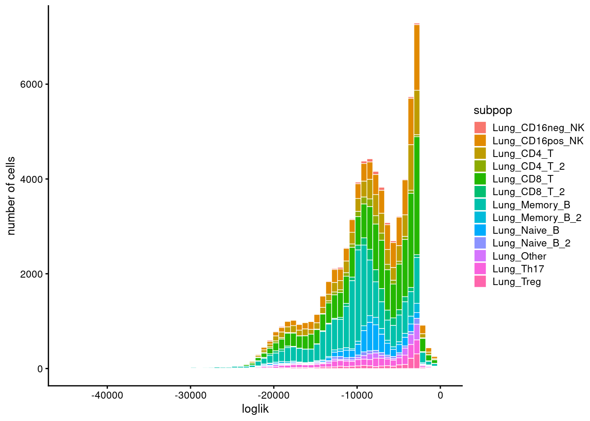

Last updated: 2024-11-07
Checks: 7 0
Knit directory: lung_lymph_scMultiomics/
This reproducible R Markdown analysis was created with workflowr (version 1.7.1). The Checks tab describes the reproducibility checks that were applied when the results were created. The Past versions tab lists the development history.
Great! Since the R Markdown file has been committed to the Git repository, you know the exact version of the code that produced these results.
Great job! The global environment was empty. Objects defined in the global environment can affect the analysis in your R Markdown file in unknown ways. For reproduciblity it’s best to always run the code in an empty environment.
The command set.seed(20221229) was run prior to running
the code in the R Markdown file. Setting a seed ensures that any results
that rely on randomness, e.g. subsampling or permutations, are
reproducible.
Great job! Recording the operating system, R version, and package versions is critical for reproducibility.
Nice! There were no cached chunks for this analysis, so you can be confident that you successfully produced the results during this run.
Great job! Using relative paths to the files within your workflowr project makes it easier to run your code on other machines.
Great! You are using Git for version control. Tracking code development and connecting the code version to the results is critical for reproducibility.
The results in this page were generated with repository version c2d3784. See the Past versions tab to see a history of the changes made to the R Markdown and HTML files.
Note that you need to be careful to ensure that all relevant files for
the analysis have been committed to Git prior to generating the results
(you can use wflow_publish or
wflow_git_commit). workflowr only checks the R Markdown
file, but you know if there are other scripts or data files that it
depends on. Below is the status of the Git repository when the results
were generated:
Ignored files:
Ignored: analysis/.RData
Ignored: analysis/.Rhistory
Untracked files:
Untracked: analysis/.ipynb_checkpoints/
Untracked: analysis/GOBP_B_CELL_ACTIVATION_INVOLVED_IN_IMMUNE_RESPONSE.v2024.1.Hs.gmt
Untracked: analysis/run_fastTopics.R
Untracked: analysis/run_fastTopics_lungOnly.R
Untracked: analysis/test.pdf
Untracked: analysis/test_GO_enrichment.ipynb
Untracked: analysis/u19_atac_fastTopics.Rmd
Untracked: analysis/u19_regulon_enrichment.Rmd
Untracked: analysis/ukb-a-446.log
Untracked: analysis/ukb-a-446_GO_immune.log
Untracked: code/run_magma.sh
Untracked: code/run_magma/
Untracked: data/DA_peaks_Tsub_vs_others.RDS
Untracked: data/DA_peaks_by_cell_type.RDS
Untracked: data/TF_target_sizes_GRN.txt
Untracked: data/Tsuo2022_meta_analysis_asthma_risk_genes.csv
Untracked: data/U19_T_cell_peaks_metadata.RDS
Untracked: data/Wang_2020_T_cell_peaks_metadata.RDS
Untracked: data/annotated_scRNA_data.RDS
Untracked: data/lung_GRN_CD4_T_edges.txt
Untracked: data/lung_GRN_CD8_T_edges.txt
Untracked: data/lung_GRN_Th17_edges.txt
Untracked: data/lung_GRN_Treg_edges.txt
Untracked: output/annotation_reference.txt
Untracked: output/fastTopics
Untracked: output/homer/
Untracked: output/ldsc_enrichment
Untracked: output/lung_immune_atac_peaks_high_ePIPs.RDS
Untracked: output/positions.bed
Untracked: output/topic1/
Untracked: output/topic10/
Untracked: output/topic11/
Untracked: output/topic12/
Untracked: output/topic2/
Untracked: output/topic3/
Untracked: output/topic4/
Untracked: output/topic5/
Untracked: output/topic6/
Untracked: output/topic7/
Untracked: output/topic8/
Untracked: output/topic9/
Untracked: test.pdf
Unstaged changes:
Modified: analysis/U19_motif_analysis.ipynb
Modified: analysis/cross_tissue_DE_u19_fastTopics.Rmd
Modified: analysis/gene_set_analysis_for_RNA_topics.Rmd
Modified: analysis/identify_regulatory_programs_u19_GRN.Rmd
Modified: analysis/rank_TFs_from_pairwise_comparison.ipynb
Deleted: analysis/test_magma.Rmd
Modified: analysis/u19_h2g_enrichment.Rmd
Deleted: code/run_fastTopic.R
Deleted: lung_immune_fine_mapping.Rproj
Note that any generated files, e.g. HTML, png, CSS, etc., are not included in this status report because it is ok for generated content to have uncommitted changes.
These are the previous versions of the repository in which changes were
made to the R Markdown
(analysis/u19_lung_atac_fastTopics.Rmd) and HTML
(docs/u19_lung_atac_fastTopics.html) files. If you’ve
configured a remote Git repository (see ?wflow_git_remote),
click on the hyperlinks in the table below to view the files as they
were in that past version.
| File | Version | Author | Date | Message |
|---|---|---|---|---|
| Rmd | c2d3784 | Jing Gu | 2024-11-07 | topic models on lung atac-seq |
| html | 0e7f144 | Jing Gu | 2024-11-07 | Build site. |
| Rmd | 3d53329 | Jing Gu | 2024-11-07 | topic models on lung atac-seq |
The objective for this analysis is to identify topics that show different proportions in cases than controls in lungs. I applied topic models on atac-seq binary matrix with all cells from lungs. The dimension for the matrix is 71635 (#cells) by 114334 (#peaks).
Parameters:
N_updates = 20 N_topics = 12
check the convergence
| Version | Author | Date |
|---|---|---|
| 0e7f144 | Jing Gu | 2024-11-07 |
Model overview:
Number of data rows, n: 71635
Number of data cols, m: 114334
Rank/number of topics, k: 12
Evaluation of model fit (210 updates performed):
Poisson NMF log-likelihood: -6.309299075816e+08
Multinomial topic model log-likelihood: -6.305963765040e+08
Poisson NMF deviance: +9.181674071631e+08
Max KKT residual: +7.256944e-04Set show.size.factors = TRUE, show.mixprops = TRUE and/or show.topic.reps = TRUE in print(...) for more information
| Version | Author | Date |
|---|---|---|
| 0e7f144 | Jing Gu | 2024-11-07 |
Warning: Using `size` aesthetic for lines was deprecated in ggplot2 3.4.0.
ℹ Please use `linewidth` instead.
This warning is displayed once every 8 hours.
Call `lifecycle::last_lifecycle_warnings()` to see where this warning was
generated.
| Version | Author | Date |
|---|---|---|
| 0e7f144 | Jing Gu | 2024-11-07 |
| Version | Author | Date |
|---|---|---|
| 0e7f144 | Jing Gu | 2024-11-07 |
| Version | Author | Date |
|---|---|---|
| 0e7f144 | Jing Gu | 2024-11-07 |
| Version | Author | Date |
|---|---|---|
| 0e7f144 | Jing Gu | 2024-11-07 |
Comparing topic proportions across batches, we see certain topic has large variation within one batch and large variation across batches.
Comparing topic proportion for each individual versus all other samples, we see k8 topic is strongly contributed by SMO-9.
10102022 10192022 12122022 12142022 8092022
COB-11 0 0 0 5275 0
COB-5 0 0 14445 0 0
COB-6 0 0 9523 0 0
SMO-2 0 0 0 0 5908
SMO-3 0 0 0 0 9816
SMO-5 2996 0 0 0 0
SMO-7 9172 0 0 0 0
SMO-8 0 8068 0 0 0
SMO-9 0 6432 0 0 0
| Version | Author | Date |
|---|---|---|
| 0e7f144 | Jing Gu | 2024-11-07 |
| Version | Author | Date |
|---|---|---|
| 0e7f144 | Jing Gu | 2024-11-07 |
Top barplot shows topic proportions do not vary a lot across cell types.
Bottom barplot shows Topic 7 has higher proportion in cases while topic 8 shows the opposite across T and NK cells. Topic 5 has higher proportion in cases while topic 9 shows the opposite across B cells.
Naive_B Memory_B NK CD8_T CD4_T Treg Th17 Other
case 1555 11037 2611 7580 3421 503 665 416
control 3645 8470 7903 13063 6001 1015 2517 1233
| Version | Author | Date |
|---|---|---|
| 0e7f144 | Jing Gu | 2024-11-07 |
| Version | Author | Date |
|---|---|---|
| 0e7f144 | Jing Gu | 2024-11-07 |
Top 500 loading peaks for each topic were tested for motif enrichment compared to all peaks used in topic models with Homer.
Topic 7 has similar motif enrichment patterns as topic 5, but topic 5 is strongly enriched for some additional motifs. Topic 8 and 9 that are in lower proportion in cases than controls indeed have distinct enrichment patterns.
========================================
circlize version 0.4.15
CRAN page: https://cran.r-project.org/package=circlize
Github page: https://github.com/jokergoo/circlize
Documentation: https://jokergoo.github.io/circlize_book/book/
If you use it in published research, please cite:
Gu, Z. circlize implements and enhances circular visualization
in R. Bioinformatics 2014.
This message can be suppressed by:
suppressPackageStartupMessages(library(circlize))
========================================
Attaching package: 'circlize'The following objects are masked from 'package:colorRamp2':
add_transparency, col2value, colorRamp2, rand_color
| Version | Author | Date |
|---|---|---|
| 0e7f144 | Jing Gu | 2024-11-07 |
`
R version 4.2.0 (2022-04-22)
Platform: x86_64-pc-linux-gnu (64-bit)
Running under: CentOS Linux 7 (Core)
Matrix products: default
BLAS/LAPACK: /software/openblas-0.3.13-el7-x86_64/lib/libopenblas_haswellp-r0.3.13.so
locale:
[1] LC_CTYPE=en_US.UTF-8 LC_NUMERIC=C LC_TIME=C
[4] LC_COLLATE=C LC_MONETARY=C LC_MESSAGES=C
[7] LC_PAPER=C LC_NAME=C LC_ADDRESS=C
[10] LC_TELEPHONE=C LC_MEASUREMENT=C LC_IDENTIFICATION=C
attached base packages:
[1] stats4 grid stats graphics grDevices utils datasets
[8] methods base
other attached packages:
[1] circlize_0.4.15 catecolors_0.1
[3] rhdf5_2.42.1 SummarizedExperiment_1.28.0
[5] Biobase_2.58.0 MatrixGenerics_1.10.0
[7] Rcpp_1.0.13-1 GenomicRanges_1.50.2
[9] GenomeInfoDb_1.34.9 IRanges_2.32.0
[11] S4Vectors_0.36.2 BiocGenerics_0.44.0
[13] matrixStats_1.2.0 data.table_1.16.2
[15] stringr_1.5.1 plyr_1.8.9
[17] magrittr_2.0.3 gtable_0.3.6
[19] gtools_3.9.5 gridExtra_2.3
[21] ArchR_1.0.2 ComplexHeatmap_2.14.0
[23] colorRamp2_0.1.0 tidyr_1.3.1
[25] dplyr_1.1.4 poolr_1.1-1
[27] cowplot_1.1.3 ggplot2_3.5.1
[29] fastTopics_0.6-193 Matrix_1.6-5
[31] workflowr_1.7.1
loaded via a namespace (and not attached):
[1] Rtsne_0.17 colorspace_2.1-1 rjson_0.2.21
[4] rprojroot_2.0.4 XVector_0.38.0 GlobalOptions_0.1.2
[7] fs_1.6.5 clue_0.3-65 rstudioapi_0.15.0
[10] farver_2.1.2 DT_0.33 ggrepel_0.9.6
[13] fansi_1.0.6 mathjaxr_1.6-0 codetools_0.2-19
[16] doParallel_1.0.17 cachem_1.1.0 knitr_1.48
[19] jsonlite_1.8.9 Cairo_1.6-2 RhpcBLASctl_0.23-42
[22] cluster_2.1.6 ashr_2.2-63 png_0.1-8
[25] uwot_0.2.2 compiler_4.2.0 httr_1.4.7
[28] fastmap_1.2.0 lazyeval_0.2.2 cli_3.6.3
[31] later_1.3.2 htmltools_0.5.8.1 prettyunits_1.2.0
[34] tools_4.2.0 glue_1.8.0 GenomeInfoDbData_1.2.9
[37] jquerylib_0.1.4 rhdf5filters_1.10.1 vctrs_0.6.5
[40] crosstalk_1.2.1 iterators_1.0.14 xfun_0.49
[43] ps_1.7.6 lifecycle_1.0.4 irlba_2.3.5.1
[46] getPass_0.2-2 zlibbioc_1.44.0 scales_1.3.0
[49] hms_1.1.3 promises_1.3.0 parallel_4.2.0
[52] RColorBrewer_1.1-3 yaml_2.3.10 pbapply_1.7-2
[55] sass_0.4.9 stringi_1.8.4 SQUAREM_2021.1
[58] highr_0.11 foreach_1.5.2 truncnorm_1.0-9
[61] shape_1.4.6 rlang_1.1.4 pkgconfig_2.0.3
[64] bitops_1.0-7 evaluate_1.0.1 lattice_0.22-5
[67] invgamma_1.1 Rhdf5lib_1.20.0 purrr_1.0.2
[70] labeling_0.4.3 htmlwidgets_1.6.4 processx_3.8.3
[73] tidyselect_1.2.1 R6_2.5.1 generics_0.1.3
[76] DelayedArray_0.24.0 pillar_1.9.0 whisker_0.4.1
[79] withr_3.0.2 RCurl_1.98-1.14 mixsqp_0.3-54
[82] tibble_3.2.1 crayon_1.5.3 utf8_1.2.4
[85] plotly_4.10.4 rmarkdown_2.29 GetoptLong_1.0.5
[88] progress_1.2.3 callr_3.7.3 git2r_0.33.0
[91] digest_0.6.37 httpuv_1.6.14 RcppParallel_5.1.9
[94] munsell_0.5.1 viridisLite_0.4.2 bslib_0.8.0
[97] quadprog_1.5-8